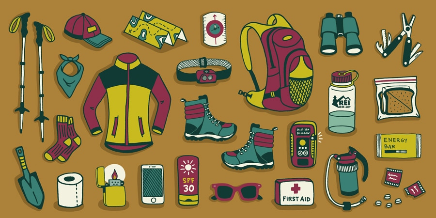

Gear & Planning • Philippines
Day Hiking Essentials
Pack water, snacks, sun protection, rain protection, comfortable footwear, a small first-aid kit, a map, and a charged phone.
Helpful reminders
- Check official park announcements and local weather before visiting.
- Bring enough drinking water for the entire hike.
- Pack light snacks or energy-giving food.
- Bring sunscreen, a hat, and sunglasses for sun protection.
- Carry a raincoat or waterproof clothing.
- Wear comfortable footwear with good grip.
- Bring a small first-aid kit and personal medications.
- Carry a map and a fully charged phone.
- Bring a power bank for emergencies.
- Pack a small trash bag to carry your waste home.
- Follow posted rules and instructions from park staff or guides.
- Respect nature and local communities; take all trash with you.